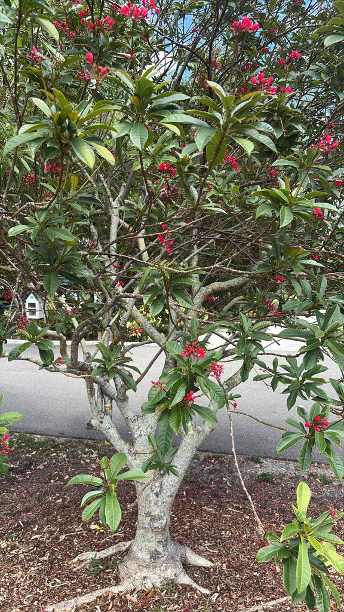

- Every part of this plant is poisonous, yet it's one of the most widely planted ornamentals in South Florida — the red flowers bloom almost continuously and butterflies can't resist them.
- The seeds contain curcin, a toxin in the same class as ricin, though less potent.
- Here's a game for visitors: find three completely different leaf shapes on the same branch — oval, fiddle-shaped, and three-lobed all grow simultaneously on this one plant.
- Native to Cuba and Hispaniola, it's tough enough to thrive in poor soils, salt air, and drought.
Native to Cuba and Hispaniola in the West Indies.
- The Peregrina is one of the most reliably flowering plants in South Florida — in frost-free conditions it blooms every single month of the year, making it a constant nectar source for butterflies and hummingbirds when little else is flowering.
- Here's the botanical puzzle hiding in plain sight: look closely at any branch and you'll likely find three completely different leaf shapes growing simultaneously — simple ovals, fiddle-shaped leaves pinched in the middle, and three-lobed leaves, all on the same plant. The botanist who named it integerrima — Latin for "most whole and unlobed" — apparently caught it on a good day.
- It belongs to the same family as the Poinsettia, Crown of Thorns, and the Pencil Tree also growing at this park — the Euphorbiaceae, a family that connects some of the most beautiful and most dangerous plants in the tropical world.
- Its cousin Jatropha curcas has been intensively researched as a biodiesel feedstock — its seeds produce oil that can power diesel engines directly, making the Jatropha genus one of the more unusual intersections of tropical ornamental gardening and renewable energy research.
- Despite its toxicity, the sap has been used in traditional Caribbean medicine — a reminder that the line between poison and remedy is often a matter of dose and preparation.
One of the most reliable butterfly and hummingbird plants in South Florida, blooming every month of the year. The year-round scarlet flower clusters are particularly valuable in winter when most other nectar sources have shut down — filling a gap that few other ornamental plants can.
Documented to attract a wide range of butterfly species as well as ruby-throated hummingbirds. Its wildlife value is as much about timing as abundance: when the garden goes quiet in cooler months, this plant keeps the pollinators fed.
By seed and stem cuttings. Seeds are viable but not considered invasive in Florida. Blooms on current year's growth, so can be pruned at any time without sacrificing flowers.
Brilliant scarlet five-petaled blooms about one inch across in multi-flowered terminal clusters held upright above the foliage, appearing nearly every month of the year — one of the longest blooming plants in any Florida garden.
Small round capsules turning from green to brown at maturity, containing smooth, speckled, toxic seeds.
Highly variable — the same branch will often carry simple ovals, fiddle-shaped leaves pinched at the middle, and three-lobed leaves simultaneously. Bronze and soft when young, glossy dark green at maturity.
Milky white latex sap released when stems are cut or damaged. Irritating to skin, eyes, and mucous membranes — wear gloves when pruning.
The nearly constant scarlet flower clusters are the signature feature — this plant is rarely without blooms. Look for the leaf shape game: three completely different leaf forms on the same branch. Watch for butterfly and hummingbird visitors throughout the year, especially in winter when other nectar sources are scarce.
Do not eat any part of this plant — the seeds are the greatest danger, containing curcin, a toxin in the same class as ricin.
The milky latex that seeps from cut stems irritates skin, eyes, and mucous membranes. Wear gloves and eye protection when pruning, and seek medical care immediately if any part is swallowed.
The seeds and sap are toxic to dogs as well; the ASPCA lists Jatropha as toxic, with ingestion causing vomiting and diarrhea. Keep children and pets well away from the plant and any fallen seeds.
The genus name Jatropha combines the Greek words for "doctor" and "food," reflecting the medicinal uses attributed to species across Caribbean and African traditional medicine. The species name integerrima means "most whole" in Latin, referring to the relatively unlobed leaves — ironic given how dramatically variable the leaf shape actually is on this plant.


- © Randall Carter (CC-BY-NC), via iNaturalist
- © Harrison Mello (CC-BY-NC), via iNaturalist
- © Rhonda Olschefskie (CC-BY-NC), via iNaturalist